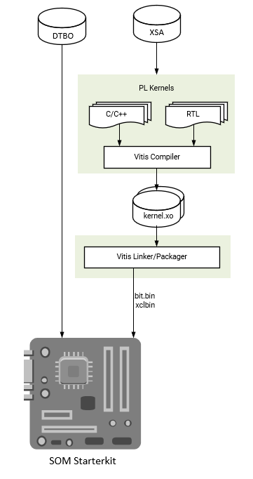

Vitis Accelerator Flow¶
This flow is for developers using Xilinx provided SOM Starter Kit Vitis Platforms as a basis for generating their own PL accelerators. Developers use a Vivado Extensible Platform (.xsa) file provided by Xilinx and import it into a Vitis Platform project. Developers then create their own overlay accelerator(s) within the bounds of the provided Vitis Platform, and generate a new bitstream (.bit file converted to .bit.bin) and metadata container file (.xclbin). Developers can use the existing device tree blob (.dtb) associated with the Xilinx provided Vitis platform. The resulting application accelerator files are then moved to the target SOM platform to be run.
To access the .xsa files for different platforms released from Xilinx, refer to KV260 Creating a Vitis Platform or KR260 creating a Vitis Platform tutorial to generate .xsa files from released reference design.
Constraints: developers must use the same carrier card and physical interface definition as Xilinx provided SOM starter kits and associated Vitis platforms.
Input: Xilinx provided Vitis platform (.xsa), Xilinx provided Vitis platform device tree (.dtbo)
Output: .bit.bin, .xclbin

Prerequisites and Assumptions¶
This document assumes that developers will use 2021.1 or later tools and SOM content releases. The tool versions should match - e.g. use the same tool versions for released BSP, Vivado, as well as PetaLinux and/or Ubuntu. For Ubuntu version, refer to table in wiki.
Vitis tools installation
PetaLinux tool (optional) installation
PetaLinux SOM Starter Kit BSP download (optional)
Step 1 - Aligning Kria SOM boot & SOM Starter Linux infrastructure¶
Xilinx built Kria SOM Starter Kit applications on a shared, application-agnostic infrastructure in the SOM Starter Linux including kernel version, Yocto project dependent libraries, and baseline BSP. When using this tutorial, make sure to align tools, git repositories, and BSP released versions.
PetaLinux BSP Alignment¶
The SOM Starter Linux image is generated using the corresponding SOM variant multi-carrier card PetaLinux board support package (BSP). Developers creating applications on the Starter Kit are recommended to use this BSP as a baseline for their application development as it ensures kernel, Yocto project libraries, and baseline configuration alignment. The multi-carrier card BSP defines a minimalistic BSP that has the primary function of providing an application-agnostic operating system, and can be updated and configured dynamically at runtime.
Step 2 - Obtain Platform files and .dtbo files¶
Developers will need to first decide on which Kria Starter Kit Vitis platform to develop on. The list of platforms can be found in KV260 Creating a Vitis Platform or KR260 creating a Vitis Platform , which also contains a tutorial to generate Platform files (including .xpfm, .xsa files) from the released reference designs.
Applications and their corresponding platforms are listed in the table below
| Application | Platform |
|---|---|
| smartcam | kv260_ispMipiRx_vcu_DP |
| aibox-reid | kv260_vcuDecode_vmixDP |
| defect-detect | kv260_ispMipiRx_vmixDP |
| nlp-smartvision | kv260_ispMipiRx_rpiMipiRx_DP |
| ROS 2 Multi-Node Communications via TSN | kr260_tsn_rs485pmod |
Alternatively, developers can generate their own platform through Vitis Platform flow.
The Vitis Platform repository has the device tree(DT) source associated with the platform captured as a .dtsi file, which is compiled into a .dtbo file to use on target. While each application firmware folders on target has an associated .dtsi/.dtbo file, and PetaLinux uses application name to generate its .dtbo file - each .dtsi/.dtbo file is actually unique to the platform on which the application is based on. The .dtsi files associated with each application can be found in Kria apps firmware. There are three ways to get the .dtbo file as shown below.
1. Compile from .dtsi¶
Developers can download the .dtsi file from Kria apps firmware and compile them using command below. For more information on dtc please refer to dtsi_dtbo_generation:
dtb -o pl.dtbo pl.dtsi
2. Obtain from Target¶
Developers can copy the .dtbo files from target from applications sharing the same platform. They can be located on target, post dnf install in /lib/firmware/xilinx/<application name>/<application name>.dtbo
An example <application name> is kv260-smartcam.
3. Generate from PetaLinux¶
Alternatively, developers can generate them in Petalinux.
petalinux-create -t project -s xilinx-<board>-<version>.bsp
cd xilinx-<board>-<version>
petalinux-build -c <application name>
The .dtbo file can be found in:
$temp_folder/sysroots-components/k26/<application name>/lib/firmware/xilinx/<application name>/<application name>.dtbo
location of $temp_folder can be found in xilinx-<board>-<version>/project-spec/configs/config
CONFIG_TMP_DIR_LOCATION="$tmp_folder"
Step 3 - Create .xclbin and .bit.bin file from Vitis¶
Typically in this work flow, developers will use Makefiles to generate their design. Example Makefiles can be found here in kv260-vitis repo and here in Vitis Library repo.
In the Makefile, developer should use PLATFORM to associate the application with Vitis Platform.
PLATFORM = <path to Vitis Platform project>.xpfm
After a successful make, there should be a .xclbin and .bit file generated.
To generate a .bit.bin file, create a <accelerator>.bif file with the following content:
all:
{
<accelerator>.bit
}
And then run bitgen to create a binary bitstream <accelerator>.bit.bin file:
bootgen -arch zynqmp -process_bitstream bin -image <accelerator>.bif
Step 4 - Move user application to the target platform¶
After generating the PL design, developers will need to move the required files (.bit.bin, .dtbo, shell.json, and .xclbin for Vitis flow) to target platform using standard tools (e.g. SCP, FTP). Please see On-target Utilities and Firmware for where to place the application firmware files.
Step 5 - Run the user application¶
Once the required files are in place, developers can run their applications using the following steps:
Use xmutil or dfx-mgr to load the application bitstream
Start their application software
Examples¶
A step by step Vitis Accelerator Flow example using Makefiles from released kv260_vitis projects can be found here
A step by step example to create a KV260 model zoo application based on released platform can be found here
Vitis hardware acceleration tutorials can be found here. They are not specific to SOM.
License¶
Licensed under the Apache License, Version 2.0 (the “License”); you may not use this file except in compliance with the License.
You may obtain a copy of the License at http://www.apache.org/licenses/LICENSE-2.0
Unless required by applicable law or agreed to in writing, software distributed under the License is distributed on an “AS IS” BASIS, WITHOUT WARRANTIES OR CONDITIONS OF ANY KIND, either express or implied. See the License for the specific language governing permissions and limitations under the License.
Copyright© 2021 Xilinx